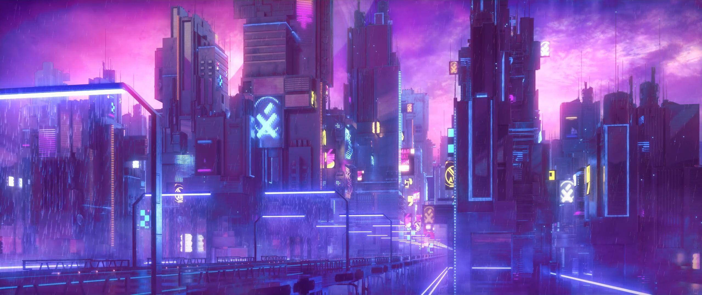
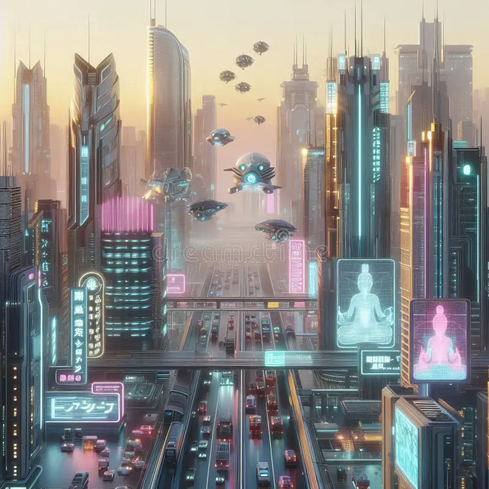
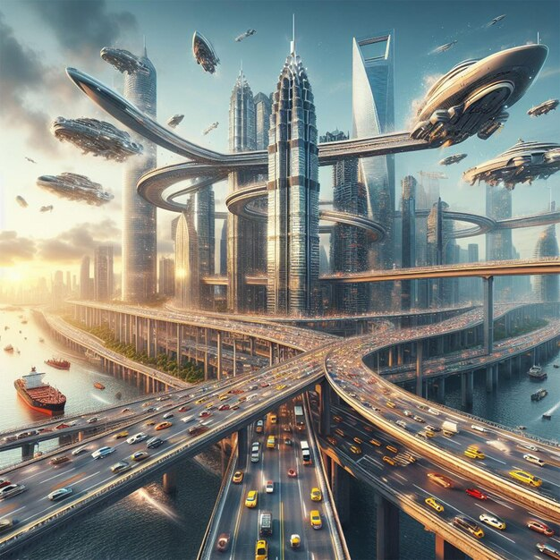
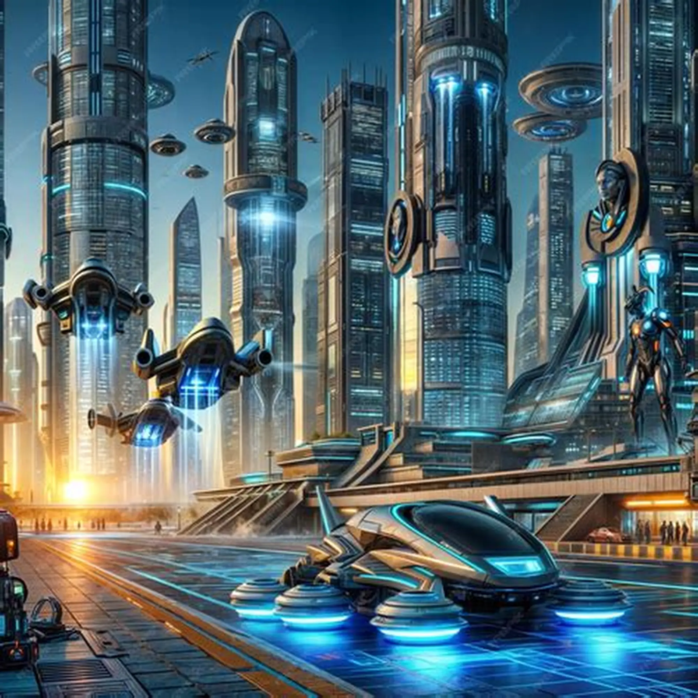
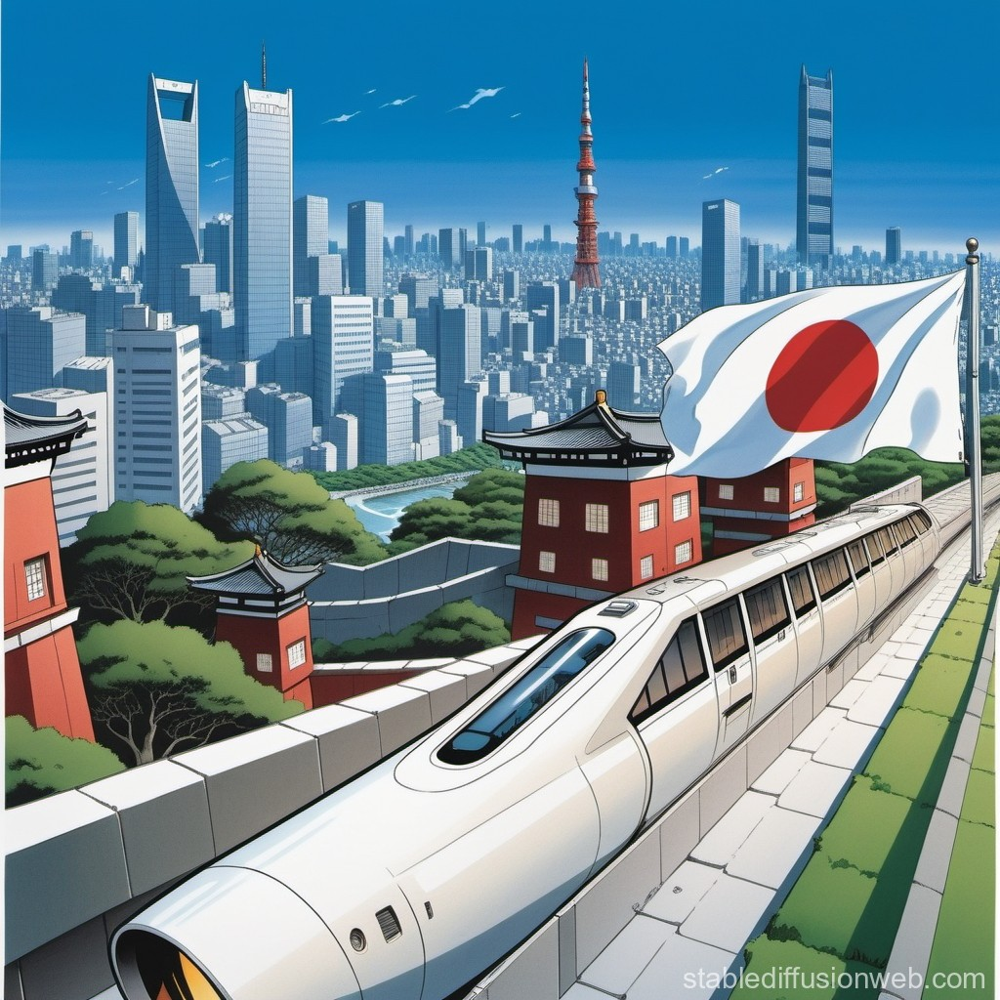

Japan’s future is built on a delicate balance between innovation and tradition. As one of the world’s most technologically advanced nations, Japan continues to develop solutions that address social challenges while maintaining harmony with its cultural values.
From smart cities and artificial intelligence to environmental responsibility and human-centered design, Japan’s vision of the future reflects both progress and respect for the past.

Technology & Innovation
Robotics, artificial intelligence, and automation play a major role in shaping Japan’s future. These technologies are designed not only to increase efficiency, but also to support aging populations and improve quality of life.


Sustainability & Environment
Environmental awareness is a key element of Japan’s future development. Renewable energy, green architecture, and sustainable urban planning are increasingly integrated into everyday life.
Human-Centered Society
Despite rapid technological progress, Japan continues to emphasize human values, social responsibility, and ethical innovation. The future is envisioned as a society where technology supports people, rather than replaces them.
Visions of Tomorrow


